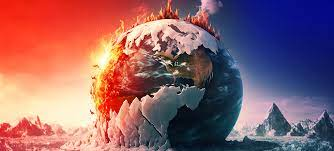
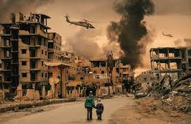
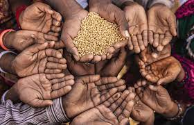
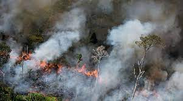

Pandemia
A pandemia de COVID-19 é uma crise global que começou no final de 2019 e rapidamente se espalhou por todo o mundo. O vírus SARS-CoV-2, que causa a COVID-19, resultou em milhões de infecções e perdas de vidas humanas. Além do impacto na saúde, a pandemia teve efeitos econômicos significativos, interrompendo cadeias de suprimentos, fechando empresas e afetando a vida cotidiana de bilhões de pessoas. As medidas de isolamento social e vacinação tornaram-se ferramentas cruciais para combater essa crise.
Pandemia:
A pandemia de COVID-19 é uma crise global sem precedentes que teve início no final de 2019 e continua a afetar o mundo até hoje. Ela foi desencadeada pelo surgimento do vírus SARS-CoV-2, que causa a doença conhecida como COVID-19. O vírus se espalhou rapidamente pelo globo, resultando em uma pandemia declarada pela Organização Mundial da Saúde (OMS) em março de 2020.
Esta crise de saúde pública trouxe uma série de desafios e impactos significativos em várias áreas:
Impacto na Saúde: A COVID-19 se espalhou rapidamente, resultando em milhões de infecções e perdas de vidas humanas. A doença varia de casos assintomáticos a sintomas graves, com uma taxa de mortalidade significativa em alguns grupos populacionais. Profissionais de saúde em todo o mundo enfrentaram uma carga de trabalho intensa, e os sistemas de saúde enfrentaram desafios críticos para fornecer assistência adequada.
Impacto Econômico: A pandemia causou perturbações econômicas significativas. Empresas tiveram que fechar temporariamente ou adotar novos modelos de negócios. O desemprego aumentou em muitas regiões e os mercados financeiros foram afetados. Governos em todo o mundo lançaram programas de estímulo econômico para ajudar a mitigar esses impactos.
Isolamento Social e Restrições: Para conter a propagação do vírus, medidas de isolamento social, quarentenas e restrições de viagem foram implementadas em muitos países. Essas medidas tiveram impactos sociais e psicológicos, além de desafios para a educação e a vida cotidiana.
Desafios Científicos e Médicos: A pesquisa científica desempenhou um papel crucial na compreensão do vírus e no desenvolvimento de vacinas e tratamentos. A corrida para desenvolver vacinas eficazes foi uma conquista notável e uma ferramenta vital para controlar a pandemia.
Desafios Globais: A pandemia destacou a importância da cooperação internacional na resposta a crises globais de saúde. Ela também revelou disparidades no acesso à saúde e à vacinação em diferentes partes do mundo.
Aprendizados e Preparação Futura: A pandemia trouxe à tona a necessidade de melhorar a preparação para crises de saúde, sistemas de saúde mais robustos e a importância da educação pública em saúde.
.jpg)
Mudanças Climáticas
As mudanças climáticas referem-se às alterações significativas e de longo prazo nos padrões climáticos da Terra. Essas mudanças são impulsionadas principalmente pela atividade humana, especialmente a emissão de gases de efeito estufa, como dióxido de carbono (CO2), metano (CH4) e óxido nitroso (N2O), na atmosfera. Aqui estão algumas informações importantes sobre as mudanças climáticas:
Emissões de Gases de Efeito Estufa: A queima de combustíveis fósseis (como carvão, petróleo e gás natural), desmatamento, agricultura intensiva e outras atividades humanas liberam grandes quantidades de gases de efeito estufa na atmosfera. Esses gases retêm o calor do sol na Terra, causando o aquecimento global.
Aumento das Temperaturas Globais: A temperatura média da superfície da Terra está aumentando, levando a eventos climáticos mais extremos, como ondas de calor, secas prolongadas e inundações.
Mudanças nos Padrões de Precipitação: As mudanças climáticas afetam a distribuição das chuvas, resultando em áreas mais secas ou mais úmidas em diferentes partes do mundo.
Derretimento de Gelo e Elevação do Nível do Mar: O aquecimento global está causando o derretimento das calotas polares e das geleiras, contribuindo para o aumento do nível do mar.
Impacto na Biodiversidade: As mudanças climáticas afetam os ecossistemas, levando à perda de biodiversidade e à extinção de espécies.
Impacto na Agricultura: Mudanças nos padrões climáticos podem prejudicar a produção de alimentos, levando a escassez de alimentos e preços mais altos.
Impacto na Saúde: O aumento das temperaturas pode afetar a saúde humana, aumentando os riscos de doenças relacionadas ao calor e disseminação de doenças transmitidas por vetores.
Redução das Emissões: A redução das emissões de gases de efeito estufa é fundamental para combater as mudanças climáticas. Isso envolve a transição para fontes de energia mais limpas, maior eficiência energética e a proteção das florestas.
Adaptação: As comunidades em todo o mundo estão tomando medidas para se adaptar aos impactos das mudanças climáticas, como a construção de diques contra inundações, o desenvolvimento de culturas resistentes ao calor e a gestão sustentável dos recursos hídricos.
Acordos Internacionais: Em 2015, a comunidade internacional assinou o Acordo de Paris, que estabelece metas para limitar o aumento da temperatura global a menos de 2 graus Celsius acima dos níveis pré-industriais, com esforços para limitar a 1,5 graus Celsius. Os países concordaram em tomar medidas para reduzir as emissões de gases de efeito estufa.
As mudanças climáticas são uma das maiores ameaças que o mundo enfrenta atualmente. Elas têm implicações profundas para o meio ambiente, a economia e a qualidade de vida das gerações futuras. Portanto, a mitigação e a adaptação às mudanças climáticas são desafios críticos que exigem ação global e colaboração de governos, empresas e indivíduos.

Conflitos Armados
Conflitos armados, têm sido uma parte constante da história da humanidade. Aqui estão alguns exemplos de crises mundiais relacionadas a conflitos armados ao longo do tempo:
Primeira e Segunda Guerras Mundiais: A Primeira Guerra Mundial ocorreu entre 1914 e 1918, enquanto a Segunda Guerra Mundial teve lugar de 1939 a 1945. Ambas as guerras foram conflitos globais que tiveram um impacto significativo na história, resultando em milhões de mortes e mudanças políticas, econômicas e sociais profundas.
Guerra Fria: A Guerra Fria foi um período de tensões geopolíticas entre os Estados Unidos e a União Soviética e seus aliados, que durou de aproximadamente 1947 a 1991. Embora não tenha havido um conflito direto entre as superpotências, houve inúmeras guerras proxy e crises, como a Guerra da Coreia, a Guerra do Vietnã e a Crise dos Mísseis Cubanos.
Guerra na Síria: Desde 2011, a Síria tem sido devastada por um conflito civil que envolve o governo sírio, grupos rebeldes e uma série de atores internacionais. Isso resultou em uma crise humanitária massiva, com milhões de refugiados e centenas de milhares de mortes.
Conflito Israel-Palestina: O conflito entre Israel e os palestinos é uma das questões mais persistentes no Oriente Médio. As tensões na região têm raízes profundas e levaram a várias guerras e conflitos intermitentes ao longo das décadas.
Guerra no Afeganistão: A Guerra no Afeganistão começou em 2001, após os ataques de 11 de setembro, quando os Estados Unidos lideraram uma coalizão internacional para combater o Talibã e a Al-Qaeda. O conflito continuou por anos e teve um impacto duradouro no Afeganistão.
Crise na Ucrânia: Desde 2014, a Ucrânia enfrenta uma crise com a Rússia, que se apoderou da Crimeia e apoiou separatistas no leste da Ucrânia. Isso resultou em confrontos armados e tensões contínuas entre a Rússia e a comunidade internacional.
Esses são apenas alguns exemplos de crises mundiais relacionadas a conflitos armados. Muitos outros conflitos ocorreram ao longo da história e continuam a surgir em diferentes partes do mundo, demonstrando a importância de esforços para a prevenção de conflitos, resolução pacífica e diplomacia internacional.

Crise Alimentar
Crises alimentares são eventos que afetam o acesso das pessoas a alimentos de qualidade e em quantidade suficiente. Elas podem ocorrer devido a várias razões e têm implicações significativas na segurança alimentar e no bem-estar das populações. Aqui estão alguns exemplos de crises alimentares mundiais:
Fome na África Subsaariana: Várias nações da África Subsaariana têm enfrentado crises alimentares recorrentes devido a uma combinação de fatores, como secas, inundações, conflitos armados, instabilidade política e pobreza. A região também é afetada pela falta de infraestrutura agrícola e sistemas de distribuição inadequados.
Crise alimentar no Iêmen: O Iêmen tem enfrentado uma das piores crises alimentares do mundo devido à guerra civil em curso no país. Conflitos armados, bloqueios de portos e infraestrutura destruída têm levado à escassez de alimentos, desnutrição generalizada e fome.
Crise alimentar no Sudão do Sul: O Sudão do Sul também enfrentou uma grave crise alimentar devido a conflitos armados e instabilidade política. Milhões de pessoas foram deslocadas e sofrem com a falta de acesso a alimentos básicos.
Fome na Venezuela: A Venezuela tem passado por uma crise econômica e política significativa, o que levou a uma escassez de alimentos e medicamentos. A hiperinflação, a degradação das infraestruturas e as restrições comerciais internacionais contribuíram para essa crise alimentar.
Crise alimentar global durante a pandemia de COVID-19: A pandemia de COVID-19 teve impactos significativos na segurança alimentar global. Restrições de movimento, interrupções nas cadeias de suprimentos e desemprego causaram insegurança alimentar em muitas partes do mundo.
Crise alimentar devido a desastres naturais: Desastres naturais, como terremotos, furacões, secas e inundações, podem causar crises alimentares em regiões afetadas. Esses eventos podem destruir colheitas, prejudicar a produção agrícola e deslocar comunidades, resultando em falta de alimentos.
As crises alimentares representam uma ameaça significativa para a saúde e a estabilidade das populações em todo o mundo. Para lidar com essas crises, são necessários esforços coordenados para fornecer assistência humanitária, fortalecer a resiliência das comunidades, investir em infraestrutura agrícola e promover a segurança alimentar a longo prazo. Além disso, a conscientização sobre questões como o desperdício de alimentos, a distribuição desigual de recursos e a mudança climática também desempenham um papel importante na prevenção de crises alimentares.

Crise Ambiental
As crises ambientais representam ameaças significativas ao equilíbrio ecológico do planeta, afetando não apenas o meio ambiente, mas também a saúde e o bem-estar das populações humanas. Aqui estão alguns exemplos de crises ambientais mundiais:
Mudanças Climáticas: O aumento das emissões de gases de efeito estufa devido a atividades humanas, como queima de combustíveis fósseis e desmatamento, tem causado o aquecimento global. As mudanças climáticas resultam em eventos climáticos extremos, como ondas de calor, furacões mais intensos e secas prolongadas, afetando o meio ambiente, a agricultura e a segurança alimentar.
Perda de Biodiversidade: A destruição de habitats naturais, a exploração excessiva de recursos naturais e a poluição levaram à perda de biodiversidade em todo o mundo. Espécies estão desaparecendo a uma taxa alarmante, o que pode ter impactos negativos em ecossistemas e na capacidade da Terra de sustentar a vida.
Poluição do Ar e da Água: A poluição do ar e da água é uma ameaça à saúde humana e ao meio ambiente. Emissões de poluentes do ar, como partículas finas e gases tóxicos, contribuem para doenças respiratórias e mudanças climáticas. A poluição da água, devido a produtos químicos tóxicos, esgoto e plásticos, prejudica os ecossistemas aquáticos e a qualidade da água potável.
Desmatamento: O desmatamento em larga escala para a expansão da agricultura, exploração madeireira e infraestrutura contribui para a degradação de florestas tropicais vitais, como a Amazônia. Isso não apenas diminui a capacidade de absorção de carbono das florestas, mas também prejudica a biodiversidade e os modos de vida das comunidades locais.
Poluição por Plásticos: A poluição por plásticos é um problema crescente nos oceanos e ecossistemas terrestres. Milhões de toneladas de plásticos entram nos oceanos anualmente, ameaçando a vida marinha, a saúde humana e a segurança alimentar.
Esgotamento de Recursos Hídricos: A má gestão da água, o uso excessivo e a contaminação de fontes de água doce estão levando à escassez de água em muitas regiões do mundo. Isso representa uma ameaça para a agricultura, a indústria, a segurança alimentar e a saúde humana.
Para enfrentar essas crises ambientais, são necessárias ações globais coordenadas, políticas eficazes, mudanças de comportamento individual e esforços para adotar práticas sustentáveis. Os acordos internacionais, como o Acordo de Paris sobre mudanças climáticas e a Convenção sobre Diversidade Biológica, desempenham um papel importante na abordagem desses desafios. Além disso, a conscientização pública, a pesquisa científica e a inovação tecnológica são essenciais para encontrar soluções sustentáveis para preservar o meio ambiente e a qualidade de vida das gerações futuras.
